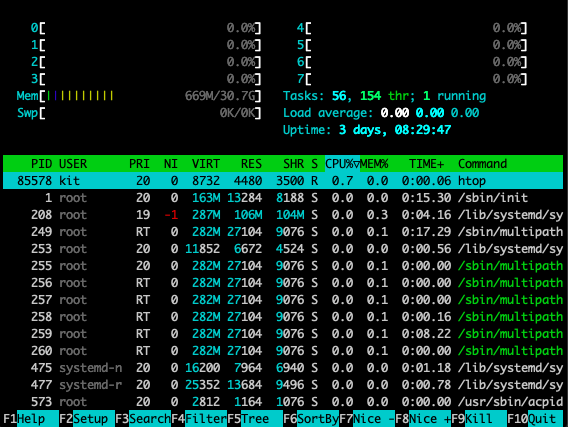

Introduction to the Unix Command Line#
Why Use the Command Line?#
These days, most of us interact with our computers primarily through point-and-click GUIs, which provide a convenient and intuitive means of navigating your operating system and software. So, why use the command line instead of a GUI? There are several reasons:
-
In the shell you can easily handle data by chaining programs into a cohesive pipeline to handle large amounts of data.
-
You can automate your workflow through scripting to save time and be more productive. A good rule of thumb is if you do something twice -- script it!
-
Your work will be much more reproducible because there will be a digital record of the steps you took to produce your results compared to point and clicking in a program like Excel.
-
If you're working with remote machines, like supercomputers or machines in the cloud, the CLI is often the only interface available.
-
The CLI is usually much faster -- once you get the hang out of it.
What We'll Cover Here#
In this brief tutorial, we'll try to provide a very quick high-level introduction to working at the unix command line, focusing on:
- Navigating the unix file system
- Understanding the structure of unix commands and knowing where to look for help
- Using screen to run tasks in the background
- Checking on available resources
Getting Started: Connect to the Server#
Let's start by connecting to the compute server the same way we did yesterday:
ssh {your_andrew_id}@training.dssg.io
or, if you need to tell ssh where to find your private key:
ssh -i {/path/to/your/private_key} {your_andrew_id}@training.dssg.io
When you first connect to the server, you'll land in your home directory, \home\{your_andrew_id}\. Let's take a look around...
Navigating the Unix File System#
Whenever you're working at the unix command prompt, you always have a working directory that specifies the location in the file system that you're executing commands from. To see your current working directory, you can use the command pwd (that is, "print working directory" -- you'll find that most unix commands are short abbreviations to save on repeated keystrokes!):
dssgfellow@dssg-primary:~$ pwd
/home/dssgfellow
This prints out an absolute path to your current location in the system, which starts with a / character (which specifies the root directory of the system). The figure below gives an example of how a typical unix filesystem is organized:

From this figure, we can see all directories are under the root directory (/).
The folders under the root directory contain information for the configuration and operation of the operating system, so you shouldn't change these (unless you really know what you are doing). The special folder home contains the files for all users. In this example, we have the directories rick, anna, emmy, bob, which contain files created by users rick, anna, emmy, and bob, respectively.
As you get deep into the file system, specifying the full absolute path to a file you want to edit or run can become very tedious. Fortunately, unix also allows you to specify a relative path to a file, starting from your current working directory and not beginning with the leading /.
There are a few special paths that can be very helpful as you move around:
- . always refers to the current working directory
- .. always refers to the parent of the current working directory
- ~ always refers to the home directory of the current user
With those basics in mind, we can start to explore.
For the fellowship, we've created a special directory on the server that's attached to a large disk to store data and modeling results. You can find it at /mnt/data. To move there, we'll use the cd ("change directory") command:
dssgfellow@dssg-primary:~$ cd /mnt/data
dssgfellow@dssg-primary:/mnt/data$ pwd
/mnt/data
~ to /mnt/data (helping us keep track of where we are) and the output of the pwd command has also changed to /mnt/data.
NOTE: to save space, from this point we won't show the full prompt, just the $ -- lines starting with a $ are commands to type and those without are outputs.
TAB is your friend
One useful tip as you're working at the command line: many unix commands support tab-completion. For instance, you can usually type just the first few characters of the directory you're navigating to then hit "TAB" on your keyboard to have the system fill in the rest of the path!
Let's list the contents of this directory with ls:
$ ls
projects
Looks like there's another directory in here called projects. And to see what's in there, we can give ls a relative path:
$ ls projects/
acdhs-housing dojo-mh kcmo-mc vibrant-routing
baltimore-roofs food_inspections pakistan-ihhn
Now we can see all the directories we've created for the projects this summer. Let's go into the one for the "food inspections" training project:
$ cd projects/food_inspections/
Now let's see what's in here with ls again:
$ ls
i_am_a_file.txt
You can copy that file to your home directory using the cp command (remembering the special path ~ means your home directory):
$ cp i_am_a_file.txt ~/
Let's do a little reorganization:
$ cd ~
$ mkdir a_new_directory
$ cd a_new_directory
What did we just do?
- We changed back to our home directory using cd
- Then we created a new directory with mkdir
- Next we changed into the new directory, again with cd and a relative path
Now suppose I want to move my copy of the test file into the new directory that I just created (and that I'm now working from). One way to do so would be specify the full path to the file, but a much easier option is to use the special relative paths of .., which means go up one directory, and ., which means the current directory:
$ mv ../i_am_a_file.txt ./
Now try ls and pwd from here -- what should you get?
Of course, we've done all this work moving this file around but haven't even looked at it's contents. To do so, we can use the very unintuitively-named command cat (actually meaning "concatenate"):
$ cat i_am_a_file.txt
Hello world!
Well, that's not very interesting -- doesn't seem like much of a reason to keep it around, so let's remove our copy of the file with rm:
$ rm i_am_a_file.txt
Danger
Unix commands can be unforgiving in doing exactly what you ask for, even if that's not really what you want! For instance, rm will permanently delete your file immediately and without asking for confirmation, so exercise caution when using it. Many other unix commands can likewise delete or overwrite existing files without a warning or an error.
Basics of Unix Commands#
So far we've introduced just a couple of the most fundamental unix commands to help you navigate the system, but this is only a tiny portion of what you can do in the shell. The number of commands to remember can seem a little overwhelming at first, but will get familiar over time.
It's helpful to realize that all unix commands share a basic syntax. Let's take a look at one to see how it works:
$ ls -l --human-readable /mnt/data/projects/food_inspections/
This command contains four parts:
ls: This is the name of the command we're running. ls is a utility that lists the files and folders present in a directory. The command name is always the part that comes first.
-l & --human-readable: Both of these are options. Options are used to change the behavior of a command. Options usually start with one or two dashes (one dash for single-character options, two for longer options).
-l tells ls to give detailed descriptions of all the files it lists (including size and permissions). --human-readable is self-explanatory: it tells ls to make its output easy to read.
/mnt/data/projects/food_inspections/: This is the argument. Here, it's a relative path to the folder that we're telling ls to list the contents of. Most unix commands take an argument - often text, or a file or folder to operate on.
And here's what happens when we run it:
$ ls -l --human-readable /mnt/data/projects/food_inspections/
total 4.0K
-rw-r--r-- 1 root training 13 Jun 1 02:09 i_am_a_file.txt
With the new options, the output from ls now gives us a lot more information: the permissions associated with the file, the owner and group, the file size and creation time, and the file name.
Getting Help#
Unix makes it easy to get help with a command:
man {command}
Opens the manual page for the command in question.
Many commands also offer a help menu accessible with {comand} --help, which can be a good place to start.
And, of course, search engines and stack overflow can be very helpful friends as finding your way around the shell!
Backgrounding Tasks with screen#
During the summer, you'll often want to run long-running jobs in the terminal. However, by default, any tasks left running when you log out of ssh will be closed.
We can get around this with a utility called screen. Screen is a "terminal multiplexer". That is, it allows you to keep run multiple terminal sessions, and keep them active even after you've logged off.
It's WAY more cool than it sounds...
screen is one of the most useful utilities you'll encounter when working in the shell, and will make your life dramatically better if you use it consitently by doing away with the need to babysit long-running tasks or losing hours (or days) of work when your internet connection goes down.
Note that tmux provides similar functionality, so if you're already familiar/prefer it, feel free to use it instead.
Screen allows us to start a process (like a long-running python script), put it in the background, and log off without cancelling the script
Running screen
- Log into the dssg server with ssh (if you're not already there)
- Open a new screen session:
$ screen
You should see a screen with information about screen (licensing, a plea for free beer, etc). Press enter to bypass this. This will open a fresh terminal session, with your terminal history should be cleared out.
- Verify that you're in a screen session by listing the open sessions owned by your account:
$ screen -ls
>There is a screen on:
> 18855.pts-44.ip-10-0-1-213 (09/30/20 18:32:05) (Attached)
>1 Socket in /run/screen/S-dssgfellow.
One session is listed. It's labeled as (Attached), which means you're logged into it.
- Let's give our system some work to do. Run the following command, which will start a useless but friendly infinite loop:
$ while :; do echo "howdy do!"; sleep 1; done
Note that at this point, you could safely log off of ssh. Your loop would still be here when you logged back on.
- Now that your screen session is busy, let's go back to our default session to get some work done.
pres ctrl+a, release those keys, and press d.
You should return to your original terminal prompt.
- Check that your screen session is still there: run
screen -lsto list open sessions again. This time, the single open session should be labeled as(Detached), which means that you're not viewing it.
Note the 5-digit number printed at the beginning of the line referring to your screen session. We'll use that number to log back into that session.
- Let's return to our session and kill that loop - we don't need it anymore.
We'll use screen -r. This reattaches the named screen. Use the 5-digit number from step 6 to refer to that session:
screen -r {screen session number}
You should now be back in your old terminal session, where that loop has been "howdy"-ing away.
Press ctrl-c to close that loop.
- Now we can close this screen session. Simply type
exitin the command line.
This should kill our session and return us to the command prompt. If you'd like, confirm that your session is closed with screen -ls.
Some notes:
- You can name your session, with the
-Sflag:
$ screen -S some_name
Once you've assigned a name, you can use it to reattach your screen sessions, which is easier than remembering/looking up a number.
-
When you only have a single detached screen session running, you can actually just run
screen -r(without specifying the session number) to quickly reattach -
Here's a quick video intro with the basics and a more in-depth tutorial (note that screen is already installed, so you can ignore those details).
Checking on Available Resources#
Finally, keep in mind that you'll be working in a shared environment with limited resources with the rest of your group and it can be a good idea to keep an eye on memory and processor usage (both to know if you're hogging resources with your processes and understand how the load looks before starting a job). A good way to do so is with the utility htop, which provides a visual representation of this information (to open htop just type htop at the command prompt and to exit, you can simply hit the q key), which will give you a representation of current usage like this:

Keeping an eye on disk space can also be helpful at times, which you can do with the df command (the -h flag translates the output to more human-readable units):
$ df -h
Filesystem Size Used Avail Use% Mounted on
/dev/root 49G 7.7G 41G 16% /
tmpfs 16G 0 16G 0% /dev/shm
tmpfs 6.2G 956K 6.2G 1% /run
tmpfs 5.0M 0 5.0M 0% /run/lock
/dev/nvme0n1p15 105M 5.3M 100M 5% /boot/efi
/dev/nvme1n1 5.0T 36G 5.0T 1% /mnt/data
tmpfs 3.1G 4.0K 3.1G 1% /run/user/1055
tmpfs 3.1G 4.0K 3.1G 1% /run/user/1038
tmpfs 3.1G 4.0K 3.1G 1% /run/user/1000
Most of your work will happen in /mnt/data, so you'll particularly want to keep an eye on that partition.
Further Resources#
If you want to dive a bit deeper into working at the command line (and learn a little about just how powerful it can be for munging data!), check out these additional guides:
-
This 2016 Tutorial introduces several of the tools for getting and manipulating data at the command line, such as
curl,grep,cut,awk, andsed -
Living in the Terminal has some good details on best practices, shell scripting basics, and editing code directly in the terminal with
vim